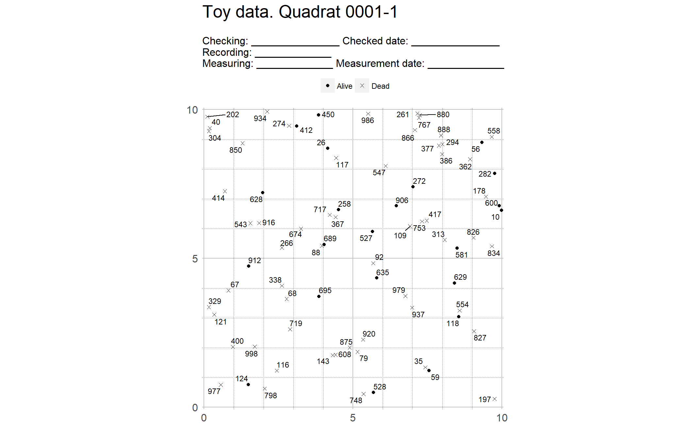
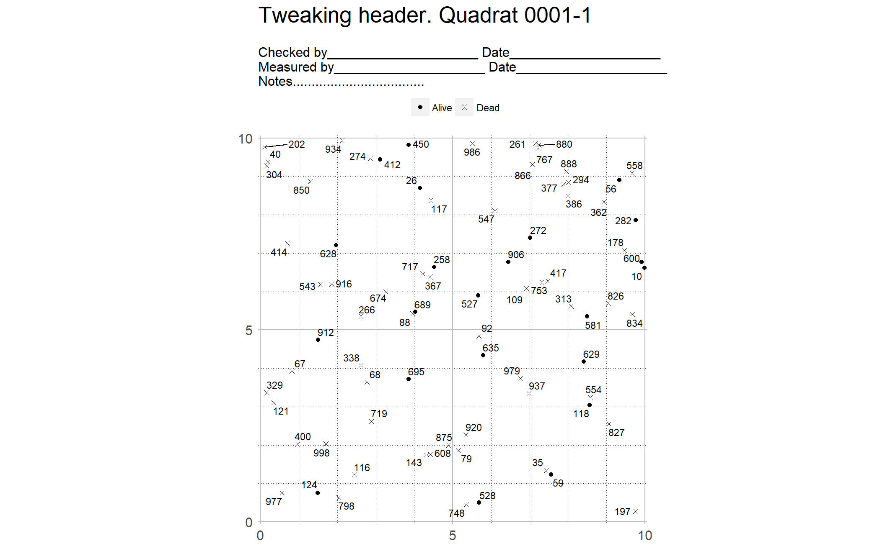
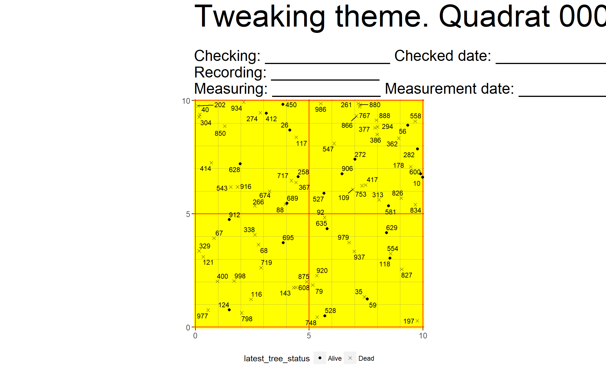

The code temporarily lives in the try package
# install.packages("devtools")
# devtools::install_github(repo = "forestgeo/try@iss1")
library(try)The data I received from Shameema looks like the one below (this is a toy data set).
str(toy_list)
#> List of 2
#> $ 1:'data.frame': 300 obs. of 4 variables:
#> ..$ tag : int [1:300] 150 455 29 178 111 154 920 272 266 833 ...
#> ..$ lx : num [1:300] 0.817 11.895 19.832 9.46 6.869 ...
#> ..$ ly : num [1:300] 13.24 18.57 4.9 7.08 11.23 ...
#> ..$ symbol: int [1:300] 1 16 16 15 0 16 1 16 15 15 ...
#> $ 2:'data.frame': 300 obs. of 4 variables:
#> ..$ tag : int [1:300] 774 768 31 265 170 440 13 797 780 42 ...
#> ..$ lx : num [1:300] 2.67 7.41 5.37 10.34 17.39 ...
#> ..$ ly : num [1:300] 17.93 4.22 9.6 12.74 12.63 ...
#> ..$ symbol: int [1:300] 1 0 16 15 15 1 1 15 15 1 ...
lapply(toy_list, head)
#> $`1`
#> tag lx ly symbol
#> 1 150 0.817 13.24 1
#> 2 455 11.895 18.57 16
#> 3 29 19.832 4.90 16
#> 4 178 9.460 7.08 15
#> 5 111 6.869 11.23 0
#> 6 154 19.928 4.08 16
#>
#> $`2`
#> tag lx ly symbol
#> 1 774 2.67 17.93 1
#> 2 768 7.41 4.22 0
#> 3 31 5.37 9.60 16
#> 4 265 10.34 12.74 15
#> 5 170 17.39 12.63 15
#> 6 440 3.16 14.88 1Before we plot it, we need to prepare the data. The function prep_repulsive_tags() does the job for this specific data set, which is based on the data from Sinharaja.
prepared <- prep_repulsive_tags(toy_list)
# Showing only the one quadrat to save space
str(prepared[1])
#> List of 1
#> $ 0001-1:'data.frame': 80 obs. of 9 variables:
#> ..$ id : chr [1:80] "0001-1" "0001-1" "0001-1" "0001-1" ...
#> ..$ tag : int [1:80] 178 920 272 266 934 977 875 986 59 695 ...
#> ..$ lx : num [1:80] 9.46 5.34 7.02 2.61 2.12 ...
#> ..$ ly : num [1:80] 7.08 2.27 7.4 5.36 9.93 ...
#> ..$ latest_tree_status: chr [1:80] "Dead" "Dead" "Alive" "Dead" ...
#> ..$ x1 : num [1:80] 0.4 0.4 0.4 0.4 0.4 0.4 0.4 0.4 0.4 0.4 ...
#> ..$ x2 : num [1:80] 9.6 9.6 9.6 9.6 9.6 9.6 9.6 9.6 9.6 9.6 ...
#> ..$ y1 : num [1:80] 0.4 0.4 0.4 0.4 0.4 0.4 0.4 0.4 0.4 0.4 ...
#> ..$ y2 : num [1:80] 9.6 9.6 9.6 9.6 9.6 9.6 9.6 9.6 9.6 9.6 ...
lapply(prepared[1], head)
#> $`0001-1`
#> id tag lx ly latest_tree_status x1 x2 y1 y2
#> 1 0001-1 178 9.460 7.077 Dead 0.4 9.6 0.4 9.6
#> 2 0001-1 920 5.341 2.272 Dead 0.4 9.6 0.4 9.6
#> 3 0001-1 272 7.020 7.402 Alive 0.4 9.6 0.4 9.6
#> 4 0001-1 266 2.614 5.359 Dead 0.4 9.6 0.4 9.6
#> 5 0001-1 934 2.122 9.934 Dead 0.4 9.6 0.4 9.6
#> 6 0001-1 977 0.564 0.756 Dead 0.4 9.6 0.4 9.6To prepare the data from other data sets you may want to see the help file and source code of each of the functions that prep_repulsive_tags() wraps.
prep_repulsive_tags
#> function(df_list) {
#> # Pad quadrat names with 0 to the left.
#> names(df_list) <- stringr::str_pad(
#> names(df_list), width = 4, pad = "0", side = "left"
#> )
#> explicit_status <- purrr::map(df_list, add_latest_tree_status)
#> identified <- identify_subquadrat(explicit_status)
#> with_limits <- add_subquad_limits(identified)
#> useful_vars <- dplyr::select(
#> with_limits,
#> id, tag, lx, ly, latest_tree_status, x1, x2, y1, y2
#> )
#> split(useful_vars, with_limits$id)
#> }
#> <environment: namespace:try>Once the data is prepared, this is all we need to produce the default plots:
plot_list <- lapply_plot_repulsive_tags(prepared, site_name = "Toy data")
plot_list[[1]]
This prints each subquadrat on one page of a pdf file. The output is one single .pdf file for all plots.
pdf(onefile = TRUE, paper = "a4", width = 11, height = 11)
plot_list
dev.off()You can tweak the plots in multiple ways.
get_header()
get_header() helps you tweak the header (see ?get_header()). To make header lines in a succing way you can use pad() (see ?pad()).
l1 <- pad(c("Checked by", "Date"))
l2 <- pad(c("Measured by", "Date"))
l3 <- pad("Notes", total_width = 40, pad = ".")
my_header <- get_header(l1, l2, l3)
lapply_plot_repulsive_tags(
prepared,
site_name = "Tweaking header",
header = my_header
)[[1]]
get_theme()
get_theme() lets you fine tune the looks of your plot (see ?get_theme()). Or you can use any of the pre-made ggplot2 themes or make your own (see ggplot2::theme()).
my_theme <- get_theme(
panel_grid_major_colour = "red",
panel_grid_minor_colour = "blue",
panel_grid_minor_linetype = "dotted",
panel_background_fill = "yellow",
plot_title_size = 40,
plot_subtitle_size = 20,
legend_position = "bottom",
axis_ticks = NULL,
axis_text_size = 10,
legend_title = NULL
)
lapply_plot_repulsive_tags(
prepared,
site_name = "Tweaking theme",
theme = my_theme
)[[1]]
See Suzanne’s with list here: https://goo.gl/NbKApk.
?add_subquad_limits() but lapply_plot_repulsive_tags() has now no way to “talk” to add_subquad_limits().